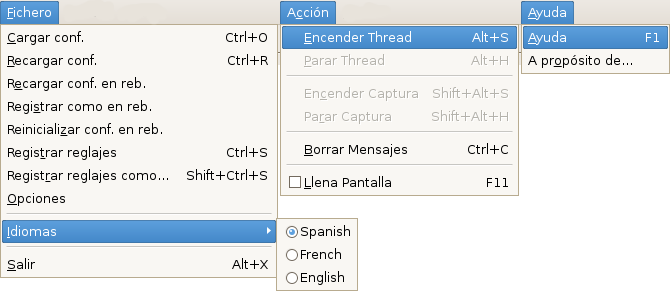

Pre: Referencias --- ↑Home --- Sig: Referencias → Ventana Vídeo
DVGrabGUI 0.9.4
Referencias → Menús

-
Fichero:
-
Cargar conf.
Cargar reglajes desde un fichero .dvs.
-
Recargar conf.
Recargar los reglajes desde el fichero .dvs corriente (puede ser lo
mismo que "Recargar conf. en reb." más abajo).
-
Recargar conf. en reb.
Recargar los reglajes en rebeldía
(desde ~/.dvgrabgui/default.dvs.xml).
-
Registrar como en reb.
Hacer de los reglajes corrientes los de en rebeldía
(registrándolos en ~/.dvgrabgui/default.dvs.xml).
-
Reinicializar conf. en reb.
Reinicializar los reglajes en rebeldía (reemplazando
~/.dvgrabgui/default.dvs.xml – tiene que
recargarlo después si lo quiere: "Recargar conf. en reb.").
-
Registrar reglajes
Registrar los reglajes corrientes en el fichero .dvs corriente.
-
Registrar reglajes como…
Registrar los reglajes corrientes en un otro fichero .dvs.
-
Opciones
Mostrar el uñero de Reglajes.
-
Idiomas
Seleccionar el idioma de la interfaz. Anote que la local
correspondiente debe ser instalada sobre su sistema: con
Debian Etch, por ejemplo, la única "local" instalada en rebeldía es
la elegida durante la instalación…
-
Salir
Salir del programa.
-
Acción:
-
Encender Thread
Encender el thread de captura (es decir pasar en modalidad de "Pausa").
-
Parar Thread
Parar el thread de captura (es decir abandonar la modalidad de "Pausa").
-
Encender Captura
Encender la grabación vídeo.
-
Parar Captura
Parar la grabación vídeo.
-
Borrar Mensajes
Borrar el contenido de la ventana Mensajes.
-
Llena Pantalla
Pasar en/Dejar la modalidad de "llena pantalla".
-
Ayuda:
-
Ayuda
Mostrar la ventana de ayuda.
-
A propósito de…
Mostrar la tradicional caja de diálogo "A propósito de…".
Pre: Referencias --- ↑Home --- Sig: Referencias → Ventana Vídeo
(c) 2006, 2007, 2008 Bastien Montagne (montagne29 en wanadoo punto fr).
Proyecto albergado en sourceforge.net/projects/dvgrabgui.